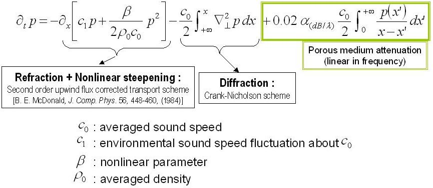
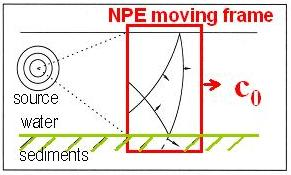

Initially developed by Ed McDonald, the NPE (Nonlinear Progressive Wave Equation) model is a time-domain parabolic-equation method designed to describe the nonlinear propagation of compressional waves.
Initialement développé par Ed McDonald, le modèle NPE (Nonlinear Progressive Wave Equation) est une méthode d'équation parabolique dans le domaine temporel, conçue pour décrire la propagation non-linéaire des ondes de compression.

The NPE is derived by combining fluid momentum and mass continuity equations, substituting an adiabatic equation of state, and transforming to a frame moving in the \(x\) direction at the speed of sound (Lagrangian coordinates).
La NPE est obtenue en combinant les équations de conservation de la quantité de mouvement et de continuité de la masse, en substituant une équation d'état adiabatique, et en effectuant une transformation vers un repère mobile dans la direction \(x\) à la vitesse du son (coordonnées lagrangiennes).
$$\frac{\partial R}{\partial t} = -\frac{\partial}{\partial x} \left( c_0 \frac{\beta}{2} R^2 \right) - \frac{c_0}{2} \int \nabla_\perp^2 R \, dx$$

Fig. 1: Schematic representation of the spatial moving frame used in the NPE model. Fig. 1 : Représentation schématique du repère spatial mobile utilisé dans le modèle NPE.